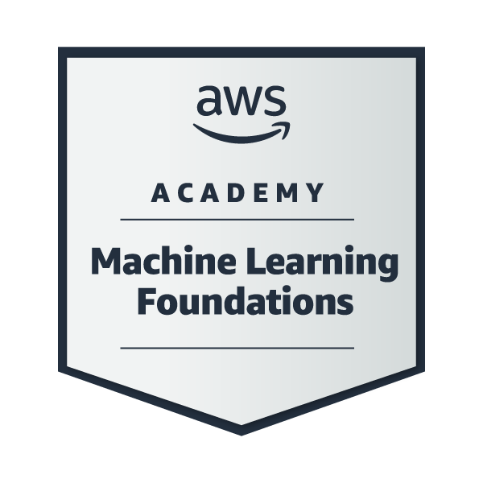
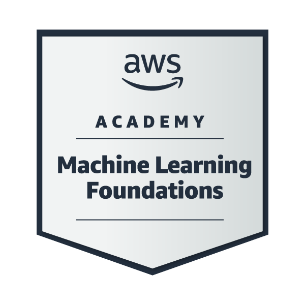

Skills
Proficient in:
Adept in Data Structures and Algorithm Design
Hi, I'm Dharmay
I am pursuing a B.Tech in
Computer Science and Engineering, Major in Artificial Intelligence and Machine Learning
at
Adani UniversityPassionate about pursuing excellence and embracing the journey. I believe in transforming passion into profession because passion is oxygen to soul.
Proficient in:
Adept in Data Structures and Algorithm Design
Achievements include:
 

Currently pursuing:
AWS Certified Solutions Architect - Associate
AWS Certified Developer - Associate
A system for managing fixed deposits, calculating interest, and handling renewals.
Calculates EMI, adjusts tenure for moratorium, and supports different repayment methods.
A bot that automates GIF sending to WhatsApp groups using Selenium WebDriver.
Real-time monitoring system for energy and fluid consumption using IoT and AWS services.
A fully integrated system that combines faculty, course, and class management with an intelligent Java-based scheduling engine.
An innovative mental wellness application that uses AI to provide personalized insights and recommendations for emotional well-being.
A system to manage student book issuance, returns, automated reminders, and late fees. Built with Node.js/Express and React.
An interactive Power BI dashboard analyzing pricing, durations, and route trends across flight classes.
Hosted Jen Looper and Nilesh Vaghela, gaining insights into AWS Leadership Principles, cloud adoption in industries, and strategies for building a thriving AWS Cloud Club.
Gained invaluable insights from AWS experts on personal branding, AI, cloud security, and architecture best practices, while engaging with industry leaders and innovative tech demonstrations.
A power-packed day of learning, networking, and hands-on insights into AWS technologies, covering GenAI, serverless architectures, AWS Amplify, and security best practices.
Volunteered at the Builder Fair IIoT Tech-Booth, showcasing an innovative project on Remote Energy and Flow Monitering System, engaging visitors with real-world applications of Industrial IoT.
Led team 'Imposters' in developing MindMosaic, an AI-powered mental wellness app, learning valuable lessons in team collaboration, strategic planning, and project execution under the guidance of ASPDC mentors.
Gained practical insights into building voice-based AI assistants using AWS services, customizing foundation models through fine-tuning, RAG, and agents, and deploying Agentic AI for real-world task automation, decision-making, and workflow orchestration.
Focused on:
AI Based Energy Efficient and Placement Optimized Algorithms for Next-Generation Wireless Technology
Impact of Data Quality on Machine Learning Model Training.
Through continuous learning and hands-on experience, I am deepening my knowledge in the fields of:
Development Technologies Cloud Computing Networking Artificial Intelligence
My aim is to bridge these technologies to develop innovative solutions for real-world challenges.
Let's connect and explore opportunities!